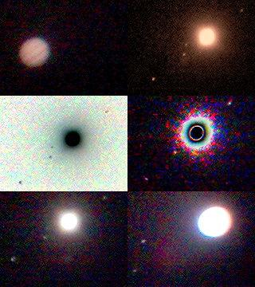

<HTML>

<HEAD>
<TITLE>Robin's Web Site - Astronomy
<link rel="stylesheet" type="text/css" href="robins_web.css">
</HEAD>

<BODY>


<TABLE class="page" border=2 width=800>
<TD>

<TABLE class="home" border=1>
    <tr>
        <td><p class=home>HOME</p></td>
    </tr>
    <tr>
        <td><a href="index.html"></a></td>
    </tr>
</TABLE>

<P class="padding"></P>

<TABLE class="one" width="500" cellspacing="0" cellpadding="0" border="1">

    <TR><font size=20>
            <TD><A HREF="software.html">Java Software</A>
	    <TD><A HREF="astronomy.html">Astronomy</A>
	    <TD><A HREF="theshoothouse.html">The Shoothouse</A>
	    <TD><A HREF="theshield.html">The Shield</A>
    </TR>

</TABLE>


<H1>Astronomy</H1>

<H2>Pictures of space taken with crap equipment (click pictures to enlarge).</H2>


<H2><U>Pictures taken with camera phone<U></H2>


<TABLE width=800>
    <TR>
        <TD>
        <H3><U><B>Sun spot</B><U></H3>
        <A HREF="astronomy/phone/bigSunSpot.jpg"></A>
	</TD>
        <TD>
	<H3><U><B>Saturn</B><U></H3>
	<A HREF="astronomy/phone/saturnGood.jpg"></A>
	</TD>
    </TR>
    <TR>
	<TD>
	<H3><U><B>Negative Saturn</B><U></H3>
<A HREF="astronomy/phone/saturnNeg.jpg"></A>
	</TD>
	<TD>
	<H3><U><B>The Moon</B><U></H3>
	<A HREF="astronomy/phone/theMoon.jpg"></A>
	</TD>
    </TR>
</TABLE>

<TABLE width=600>
	<TD>
	<H3><U><B>Jupiter & Moons</B><U></H3>
	<A HREF="astronomy/phone/Jupitercompilation.jpg"></A>
	</TD>
	<TD>
	<H3><U><B>Moon compilation</B><U></H3>
	<A HREF="astronomy/phone/Mooncompilation2.jpg"></A>
	</TD>
</TABLE>

<H3><U><B>Jupiter's Moons Labelled</B><U></H3>
<A HREF="astronomy/phone/Jupiter&moons.jpg"></A>


<H2>Pictures taken with a digital camera held up to the eyepiece</H2>


<H3><U><B>Saturn</B><U></H3>
<A HREF="astronomy/camera/saturncropped.jpg"></A>
<TABLE>
    <TR>
        <TD>
	<H3><U><B>Venus in the evening sky</B><U></H3>
<A HREF="astronomy/camera/venuszoom1.jpg"></A>
	</TD>
    </TR>
    <TR>
        <H3><U><B>Close-up of the Moon</B></U></H3>
<A HREF="astronomy/camera/Moonveryclose.jpg">
    </TR>
</TABLE>


<H3><U><B>Portrait of the Moon</B></U></H3>
<A HREF="astronomy/camera/moon2_cropped.jpg"></A>

</TD>
</TABLE>

</BODY>

</HTML>
